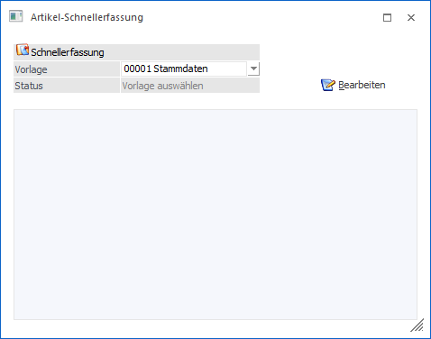
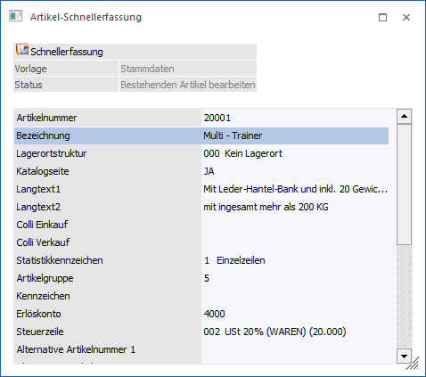
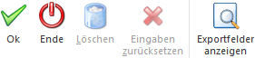

Im Menüpunkt…
1 WinLine FAKT
1 Stammdaten
1 Artikelstamm
1 Artikel-Schnellerfassung
… können mit Hilfe einer Vorlage neue Artikel erfasst oder bestehende Artikel editiert werden.

Ø Vorlage
An dieser Stelle wird die Vorlage ("Export/Import Vorlage" für Artikel) ausgewählt, mit deren Hilfe die Anlage bzw. das Editieren erfolgen soll.
Hinweis
Die Vorlagenanlage findet in WinLine START (Vorlagen - Vorlagen Anlage) statt.
Ø Status
In diesem Informationsfeld wird der aktuelle Status der Schnellerfassung angezeigt, wobei folgende Stati möglich sind:
ü Vorlage auswählen
Es wurde noch
keine Vorlage geladen. Dieses wird durch Anwahl des Buttons "Bearbeiten"
ausgelöst.
ü Artikel editieren
Der Fokus
steht in der Tabelle auf dem Feld "Artikelnummer", wobei noch keine bestehende
oder neue Artikelnummer eingegeben wurde.
ü Bestehenden Artikel
bearbeiten
Es wurde ein bereits bestehender Artikel aufgerufen, welcher
editiert werden kann.
ü Neuen Artikel anlegen
Es wurde
eine nicht existierende Artikelnummer eingeben.
Ø Bearbeiten
Durch Anwahl des Buttons "Bearbeiten" werden die Felder der Vorlage in der Tabelle dargestellt. Anschließend können neue Artikel kreiert oder bestehende Artikel geändert werden.
Beispiel

Buttons

Ø Ok
Durch Anwahl des Buttons "Ok" bzw. der Taste F5 wird der Artikel gespeichert.
Ø Ende
Durch Anwahl des Buttons "Ende" bzw. der Taste ESC wird zurück auf das Eingabefeld "Stammdaten" gewechselt und alle nicht gespeicherten Eingaben verworfen.
Ø Löschen
Durch Anklicken des "Löschen"-Buttons wird der Artikel gelöscht. Voraussetzung dafür ist, dass für den Artikel keine Lagerbewegungen und keine Belege erfasst wurden.
Ø Eingaben zurücksetzen
Durch Anwahl des Buttons "Eingaben zurücksetzen" wird die Anzeige des ausgewählten Artikels beendet und der Fokus auf das Feld "Artikelnummer" gesetzt. Alle vorgenommenen Änderungen werden dabei verworfen.
Ø Exportfelder anzeigen
Durch Anklicken des "Exportfelder anzeigen"-Buttons (vor Anwahl des Buttons "Bearbeiten") werden in der Tabelle auch Exportfelder dargestellt.
Hinweis
Die Exportfelder sind nur Lese-Felder und können nicht editiert werden.